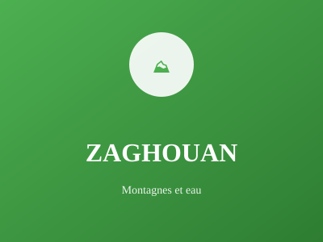

Région montagneuse du nord

Région montagneuse du nord, Zaghouan est célèbre pour ses sources d'eau naturelles et son patrimoine archéologique romain impressionnant. Le paysage montagneux offre une beauté naturelle remarquable.